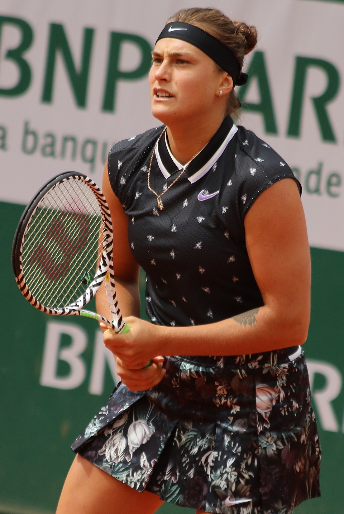

Арына Сабаленка (нар. 1998)
Шлях да вяршыні
Арына нарадзілася ў Мінску. Бацька выпадкова прывёў яе на тэнісныя корты ў дзяцінстве, і гэта спантаннае рашэнне вызначыла лёс дзяўчынкі. З ранніх гадоў яна вылучалася выключнай фізічнай сілай і бескампрамісным стылем гульні. Дзякуючы тытанічнай працы, характару і ўменню трымаць удар, яна хутка ўварвалася ў эліту Жаночай тэніснай асацыяцыі (WTA), прымусіўшы лічыцца з сабой самых тытулаваных саперніц.
Галоўныя трыумфы і спартыўны стыль:
- Каралева харда: Арына дасягнула выбітных вынікаў на самых прэстыжных кортах свету. Яна з'яўляецца шматразовай чэмпіёнкай Адкрытага чэмпіянату Аўстраліі (Australian Open) і пераможцай Адкрытага чэмпіянату ЗША (US Open), дзе дэманстравала фенаменальны ўзровень канцэнтрацыі.
- Першая ракетка свету: Сабаленка дабілася ўнікальнага дасягнення, здолеўшы ў розныя гады ўзначаліць сусветны рэйтынг WTA як у адзіночным, так і ў парным разрадах (у дуэце з Элізэ Мертэнс).
- Стыль «тыгрыцы»: Яе візітнай карткай стаў агрэсіўны, сілавы тэніс са знішчальнымі ўдарамі на задняй лініі і гарматнай падачай. Татуіроўка тыгра на яе руцэ ідэальна адлюстроўвае баявы настрой і нязломнасць на корце.
- Псіхалагічная ўстойлівасць: Сабаленка даказала, што здольная пераадольваць глыбокія спартыўныя крызісы. Справіўшыся з праблемамі ў падачы і эмацыянальным ціскам, яна вярнулася ў тур яшчэ больш моцнай, сканцэнтраванай і ўпэўненай у сабе.
Сучасны статус і ўплыў
Сёння Арына Сабаленка — гэта не проста чэмпіёнка, а глабальны брэнд у свеце спорту. Яе неверагодная энергетыка, шчырасць у інтэрв'ю і здольнасць ператвараць кожны матч у яркае шоу збіраюць мільёны прыхільнікаў па ўсёй планеце. Яна працягвае перапісваць гісторыю беларускага тэніса, натхняючы новае пакаленне ніколі не здавацца перад цяжкасцямі.